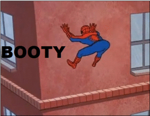
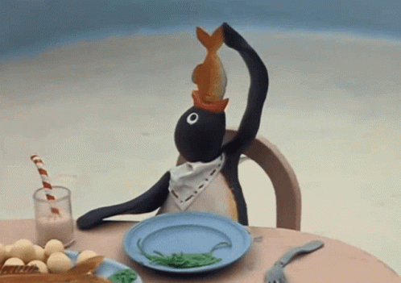
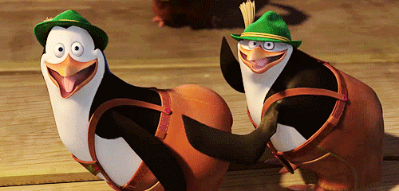
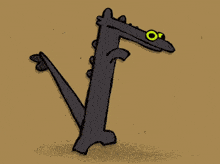

Ola amigo
Ola amigos
I migliori meme del mondo

Spooderman

Chipi chipi Chapa chapa dubi dubi

Il toilet
noot noot

Siuuuuuuuuuuuuuuuuuu
Los pinguinos de la magadascar
Zmminamina eheh
Eh EH nice
Questo è il mio preferito
noot noot
Evoluzione dei meme di poldo
By Lorenzo Illeragam
Meme by Lorenzo magarelli is licensed under CC BY-ND 4.0


body><